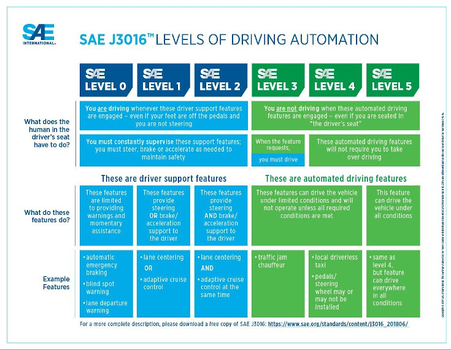

How are autonomous vehicles impacting our lives?
When discussing autonomous vehicles, it is imperative to quantify what an autonomous vehicle is and the progressive steps within. Fortunately, there is an international standard for just this; the SAE J3016 (Imaged below). Currently, the state-of-the-art technology that is publicly available is Tesla AutoPilot FSD V.10 running on Tesla self-manufactured Hardware V3. (The Tesla Team 2019, para. 1) Present competition to Tesla Autopilot that is publicly available truthfully is limited; however, this does not suggest it does not exist. Volkswagen, the largest automaker in the world owning brands like Audi, Bugatti and Lamborghini are investing 'EUR 44 billion (AUD 77 Billion) by 2023 in the paradigm shift toward electric mobility and fully networked, self-driving cars' (Volkswagen, n.d).
There are two main approaches to self-driving cars regarding the onboard instrument. All companies have concluded that sophisticated camera arrays and radar are imperative to the long-term goal of fully autonomous vehicles; however, the use of LIDAR still up for debate. Light Detection and Ranging, LIDAR, 'is a remote sensing method used to examine the surface of the Earth' (NOAA 2020) is still very much in development by the likes of Mercedes and Volkswagen for the use in autonomous vehicles. Tesla, however, has rejected the technology suggesting it is doomed. (Lee T 2019)
From a hardware perspective, Nvidia once monopolised the space of autonomous vehicle AI chips, 'NVIDIA DRIVE AGX is a scalable, open autonomous vehicle computing platform that serves as the brain for autonomous vehicles.' (NVIDIA, n.d) Previously being the only hardware platform of its kind, however, this changed in August 2018 when Tesla announced they will be moving away from their partnership with Nvidia to develop their own AI chip. Tesla made a move for four primary reasons - economics, control of R&D and protection of IP, performance, and redundancy reasons, Elon Musk quotes 'any part of this could fail, and the car will keep driving' (Hollister S 2019, para. 3).
The software associated with AutoPilot, being the most advanced on the market, is quite an impressive feat of artificial intelligence development. Another example of current Vehicle Automation systems is Nissan's Propilot; however, this does not constitute a comparable feature set. Tesla AutoPilot Ai drives a rich feature set such as 'lane centring, adaptive cruise control, self-parking, the ability to change lanes, navigate autonomously on limited access freeways automatically, and the ability to summon the car to and from a garage or parking spot'. (Wikipedia, 2020, para. 1)
The current state of autonomous vehicles, due to being the current leader in the space, is very much governed by the capabilities of Autopilot V10. Depending on whom you converse with the technology is a high level 2, borderline level 3, autonomous vehicle. As we can see in the video below (Tesla 2019), Tesla is indeed a certain level 3 autonomous vehicle, however, there are unfortunately many instances for various reasons where these level 3 attempts have not proceeded as intended. Hence why Tesla vehicles are considered a high level of 2 borderline level 3 autonomous vehicle.
(Tesla 2019) https://www.youtube.com/watch?v=tlThdr3O5Qo
The next steps for the technology allowing it to progress through the relative tiers on the way to entirely autonomous vehicles come from many angles. Firstly, for the space in its entirety, crucial publicly available competition is imperative. Over time this will result in the reducing cost for consumers, allowing for higher levels of R&D budget to be assigned and overall bringing a more top quality experience to the consumer for a lower price. Leading into the collection of data with live real-world users. Tesla, as off August 2019 has collected 1 Billion miles of data from users using AutoPilot. (Paolini G, 2019, para 3) It is imperative to the R&D associated with the software and hardware driving autonomous vehicles.
Another future instrumental step for space will be the vehicle to vehicle communication (V2V) and Vehicle-to-everything (V2X). As the names suggest, V2V allows the car to understand positioning, direction, velocity, route, traffic, road condition, etc. all through a WLAN (Here Mobility, n.d, para. 2) communicating with other vehicles on the road. While V2X, it is the communication between the car and everything else. Some examples of this are smart pavement, stop signs, guard rales, and so forth. The combination of both V2X and V2V provides all vehicles with a much detailed "map" of its surrounds to ensure it is making the best calculation.
Allowing vehicles to communicate with not only other cars, but their surrounds will be imperative to autonomous vehicles. It provides a more detailed data set to the vehicle improving not only the safety and current experience but enabling the technology to increase its functionality set. However, this technology does come at a cost, bandwidth, as both operate on a wireless network as the primary backbone for both V2X and V2V it will be dependent on technologies such as 5G. 5G will enable significant uplift in bandwidth channels to help ensure this technology is feasible and functional without congestion.
Overall autonomous vehicles are led by Tesla AutoPilot V.10 demonstrating a high level 2 on the SAE J3016 standing. In the not too distant future, we should see companies like Volkswagen, Mercedes and other automakers start to chase their market share in this space increasing competition. Through enabling technologies such as 5G, V2X, V2C and big data analysis the next major leap over the next 3 – 5 years for autonomous vehicles is the communication between itself, surrounding vehicles and their environment to improve the safety, functionality and feasibility.
One of the potential impacts associated with autonomous vehicles from a top-level position to the consumer is the business strategy of cars as a service (CaaS). Nissan is currently investigating this business model launching a subscription service for a selection of their range. (Hawkins A 2020, para 1). The autonomous vehicle will have the most significant impact on this business model, making it commercially viable due to the great reduction of the ongoing cost of ownership associated. Either OEMs or fleet management companies with cost agreements to the OEM will be able to leverage this to provide a more affordable overall cost of ownership than the consumer purchasing the vehicle outright. The likely change of this is more consumers will no longer own their vehicles; however, there will be periodic subscription services enabling affordable, safer and more feature-rich modes of transportation than currently possible.
The two significant impacts for the consumer are all the associated safety, practicality and features with autonomous vehicles alongside the likely new business strategy to be adopted changing the way consumers interact with their vehicles from a finance perspective.
Another potential impact of CaaS is a positive one for the environment. As autonomous vehicles slowly progress and take market share, CaaS will continue to grow. Autonomous vehicles will have a statistically lower chance of causing accidents combined with the higher resource management associated with CaaS. The overall waste from cars should decrease and increase the recycling of parts.
As autonomous vehicles and CaaS begin to grow, there will be a shift in the workforce associated. From a commercial transportation perspective long term, the truck driving industry may be revolutionised.
With the Tesla semi-truck already in the works, there is a very real possibility business will start to replace traditional commercial transport with autonomous trucks. Mechanics, especially independent, will also see an impact, Tesla requires vehicles to be taken to an authorised service centre, like Tesla, Jaguar also require this with the I-Pace. As vehicles progress through autonomy and switch to electric, the mechanics' job will require major upskilling to now deal with electrical and software issues. However, we should also see large intakes of electrical engineers, software engineers and Ai specialists as autonomous vehicles begin to become more and more present. Not to mention, businesses will want to be leveraging the newfound CaaS business model.
My daily life will be drastically affected by the introduction of autonomous vehicles. One thing that will be a mental challenge is the confidence in an autonomous vehicle to drive and get to my destination safely and without issue. While this won't take long to adjust to, it will require me to relearn the muscle memory I have obtained over the years. Another element that will be very different is the potential to reduce the total number of vehicles we have in a household. Assuming we can send autonomous vehicles on loan journeys, there is a possibility to have one vehicle that services multiple individuals' day to day activities.
The personal financial impact could be quite significant, as well as the overall cost of ownership especially in combination with CaaS could induce quite a substantial cost saving, especially if the service is shared with multiple individuals within the household. Combine this with the potential to participate in services such as RoboTaxi it does provide an interesting finical outcome for all involved.
Another factor to consider with autonomous vehicles is if widespread adoption does take place the potential impact it can have on our road and transportation network. As autonomous vehicles will be able to communicate with each other and their environments, not only will there be drastically fewer accidents on the road, but the flow of traffic should also see drastic improvements. Suggestions for a potential 35% increase in traffic flow rates through corporative driving show a substantial potential positive outcome. (Hyldmar N, He Y, & Prorok A 2019) Simply spending fewer times commuting and more times at our desired destination is a reality all of us would happily take on.
Information References
Hawkins A 2020, Nissan launches a subscription service starting at $699 a month, The Verge Viewed 11 April 2020, < https://www.theverge.com/2020/2/19/21143852/nissan-switch-subscription-service-price-model-vehicle?fbclid=IwAR2slKJREkohefr-leMEFUZizIuk5qR6ne_doyrqc65F5-CSn6rTi5BVokk>.
Hollister S 2019, Tesla's new self-driving chip is here, and this is your best look yet, The Verge, Viewed 7 April 2020, < https://www.theverge.com/2019/4/22/18511594/Tesla-new-self-driving-chip-is-here-and-this-is-your-best-look-yet>.
Here Mobility, n.d, Smart Transportation, Here Mobility, Viewed 11 April 202, < https://mobility.here.com/vehicle-vehicle-communication#pgid-1716>.
Hyldmar N , He Y, & Prorok A 2019, A Fleet of Miniature Cars for Experiments in Cooperative Driving, Cornell University,
Lee T 2019, Elon Musk: "Anyone relying on lidar is doomed." Experts: Maybe not, arstechnica.com, Viewed 7 April 2020, < https://arstechnica.com/cars/2019/08/elon-musk-says-driverless-cars-dont-need-lidar-experts-arent-so-sure/>.
NOAA 2020, What is LIDAR?, oceanservice, Viewed 7 April 2020, < https://oceanservice.noaa.gov/facts/lidar.html>.
NVIDIA, n.d, 'NVIDIA DRIVE', NVIDIA, Viewed 7 April 2020,
Paolini G, 2019, Tesla, the data company, CIO, Viewed 11 April 2020,
Su J, 2018, Why Tesla Dropped Nvidia's AI Platform For Self-Driving Cars And Built Its Own, Forbes, Viewed 7 April 2020, < https://www.forbes.com/sites/jeanbaptiste/2018/08/15/why-Tesla-dropped-nvidias-ai-platform-for-self-driving-cars-and-built-its-own/#376c0fc26722>.
The Tesla Team 2019, Introducing Software Version 10.0, Tesla, Viewed 7 April 2020,
Volkswagen, n.d, The race toward autonomous driving, Volkswagen, Viewed 7 April 2020,
Wikipedia 2020, Tesla Autopilot, Wikipedia, Viewed 11 April 2020,
Image References
Shutteworth J 2019, SAE Standards News: J3016 automated-driving graphic update, SAE, Viewed 7 April 2020, < https://www.sae.org/news/2019/01/sae-updates-j3016-automated-driving-graphic >.
Video References
(Tesla 2019), Full Self-Driving, YouTube, 22 April, Tesla, Viewed 7 April 2020, < https://www.youtube.com/watch?v=tlThdr3O5Qo>.
(SciShow, 2019), These Smart Roads Could Change the Future of Driving, 30 September, SciShow, Viewed 11 April 2020,< https://www.youtube.com/watch?v=p3SFUZfZuPs>.